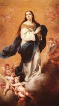
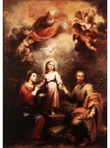
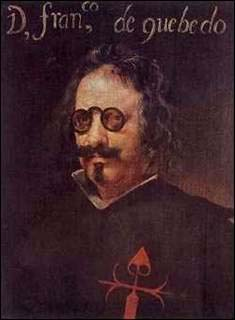

NOTAS - Capítulo 7
arbitristas
Suelen llamarse arbitristas a los autores de los numerosos textos de teoría política y económica publicados a finales del siglo XVI y a lo largo del siglo XVII. Los teóricos de más renombre estaban vinculados a universidades importantes (como la de Salamanca o la de Valladolid) y ofrecían consejos públicos al rey (y a sus consejeros) en sus escritos. Se llamaban así en referencia a arbitrio, un término jurídico para una decisión o medida tomada por el rey. Muchas de sus sugerencias parecen hoy ingenuas y fantasiosas aunque hubo otras bastante sensatas. En general se alineaban con las tendencias mercantilistas imperantes en Europa en aquel momento. (La expulsión de los moriscos fue consecuencia en parte de una de las sugerencias más absurdas de algunos arbitristas; en vez de fortalecer la economía esta decisión racista supuso el debilitamiento de la economía rural de Aragón y Valencia.) Uno de los ejemplos más llamativos de este tipo de literatura es el texto del andino Felipe Guaman Poma de Ayala, Nueva corónica y buen gobierno, enviado a Felipe III como denuncia de los abusos de los españoles en Perú y como intento de mejorar gobierno virreinal. (Véase "Lecturas")]
artesanía novohispana: influencia china
Los artesanos mexicanos que se dedicaban a la producción de cerámica empezaron a imitar modelos chinos, como se ve en este ejemplo de un plato y un jarrón hechos en la ciudad de Puebla a mediados del siglo XVII. Nótense las figuras chinas en ambos objetos y los motivos ornamentales que recuerdan tanto la cerámica china como el arte musulmán (y la cerámica de Valencia), evocando así dos tradiciones artísticas que se asociaban con los artículos de lujo en Europa. Otro indicio de la influencia de tradiciones artísticas asiáticas es este pequeño cuadro de 1693 del artista mexicano Nicholás Correa que representa las bodas de Caná (en las que Jesucristo convierte el agua en vino). Todo el cuadro está incrustado con pequeños fragmentos de nácar (ing., mother of pearl), una técnica desarrollada en la ornamentación de muebles y artículos de lujo producidos en el Asia oriental. La pequeña caja a la izquierda (un costurero) muestra el uso de incrustaciones de nácar (y carey, ing., tortoiseshell) en un objeto de lujo con un fin utilitario. El costurero es o bien de Filipinas o de Perú donde surgió en el siglo XVII una industria local que producía tales artículos. (Haz clic en las imágenes para ampliarlas.)

Barroco
Nótese que como otros muchos términos empleados para referirse a movimientos y tendencias estéticos y culturales, barroco se ha aplicado modernamente al arte del siglo XVII y comienzos del XVIII; en la época no se utilizaba para referirse a las corrientes estéticas del momento.
A Caravaggio se le considera un importante precursor del barroco (y algunos lo incluyen plenamente dentro de aquella estética), sobre todo por su uso del claroscuro (tenebrismo, o contraste entre luces y sombras). Tuvo gran influencia en el pintor español Diego Velázquez, quien conoció su obra en persona cuando viajó a Italia. El cuadro a la izquierda, de Caravaggio, representa la crucifixión de San Pedro (boca abajo a petición suya, según la tradición, para no compararse con Jesucristo). Nótese el claroscuro y el dramatismo de la escena. (Haz clic en esta imagen y las otras para ampliarlas.)

El cuadro a la derecha es del pintor que tal vez mejor represente el barroco: el flamenco Pieter Paul Rubens (1577-1640), pintor de la corte del gobernador de los Países Bajos y alguien que viajó varias veces a España en misiones diplomáticas al servicio de los Habsburgo. En la década de los 20 conoció a Velázquez, en cuya obra Rubens ejerció una importante influencia. (Dos de los cuadros que cuelgan en las paredes del salón representado en la obra más célebre de Velázquez, Las meninas, son copias de cuadros de Rubens. Véanse las "Lecturas" para más información sobre este cuadro de Velázquez.)
En el campo de la escultura, lógicamente, también se sintieron las nuevas tendencias. A la izquierda, la escultura de Bernini que representa a David a punto de lanzar una piedra (de 1623); compárese con el David de Miguel Angel (de 1504), a la derecha, emblemático de la estética renacentista con la que rompieron los artistas y arquitectos del barroco, en su esfuerzo por conseguir mayor teatralidad y dinamismo. (Véase "Lecturas" para ejemplos de arquitectura barroca.)

Carlos II "el Hechizado"
Retrato del monarca pintado entre 1675 y 1680 por Claudio Coello.
Camino Español
El llamado "Camino Español" unía las posesiones de los Habsburgo españoles en los Países Bajos con las de Italia, pasando por el Franco Condado. La ruta pasaba también por estados aliados, de los cuales los más importantes, como Alsacia (que se incorporaría a Francia después de la Guerra de los Treinta Años) eran posesiones de los Habsburgo de Austria. El camino era estratégico en los conflictos con Francia y los Países Bajos ya que permitía el transporte de tropas y municiones entre Italia y Flandes. Esta ruta también correspondía en épocas de paz a una de las arterias comerciales más importantes del continente, el tercer lado del triángulo comercial (y político y cultural) que unía a España con Italia y Flandes en los siglos XVI y XVII.
Cartagena de Indias
Este mapa es del atlas impreso en Amsterdam en 1662 (G. Bleauw) y representa la península en la que se encuentra la ciudad de Cartagena de Indias (en el Nuevo Reino de Granada, capitanía general del Virreinato de Perú, correspondiendo más o menos a la Colombia actual; según la orientación del mapa, el norte está abajo). Nótese la organización rectilínea de la calles de la ciudad recordándose, por supuesto, que se trata de una representación idealizada. Abajo, la fortaleza o castillo de San Felipe de Barajas, construido a mediados del siglo XVII, y un grabado holandés de 1671 de la ciudad que pretende captar la idea de la actividad del puerto. (Se trata de otra idealización, ya que el castillo queda reducido a una mera torre.) Nótense en estas imágenes los rasgos de la ciudad que describe Domínguez Camargo en su poema (véanse las "Lecturas"), entre ellos la "bisagra" de la península que la une al continente. (Haz clic en las imágenes para ampliarlas; hacer clic una segunda vez en el mapa y el grabado permite verlos con más detalle aún.)

Claudio Coello (1642-1693)

Pintor de Cámara de Carlos II, Claudio Coello se considera el último gran exponente de la pintura barroca en España. Este enorme cuadro, que mide tres metros por cinco y que está instalado en la sacristía del palacio de El Escorial, es una representación virtuosista de la celebración de una misa en la que participó el propio rey en 1684. El cuadro presenta un llamativo ilusionismo que reproduce las figuras humanas con un realismo formidable y somete toda la escena a un dramático perspectivismo. Por otra parte, Coello evoca la dimensión espiritual de la escena con las figuras que flotan en el aire, realizadas con pinceladas más difusas (evocadoras del "estilo vaporoso" de Murillo). Toda la escena sirve para promocionar la tradicional mitificación de los Habsburgo como la dinastía europea que ejecutaba la voluntad divina en la tierra, a pesar del declive indiscutible que la monarquía española sufría a finales del siglo XVII. (Haz clic en la imagen para ampliarla.)
comercio entre las colonias España: rutas principales
Tras el establecimiento del monopolio de Nueva España sobre el comercio de Manila, los galeones iban únicamente de Filipinas a México. (Haz clic en el mapa.)
comunidades de esclavos fugados (palenques y quilombos)
Una de las primeras comunidades de esclavos fugados se estableció de hecho a finales del siglo XVI, en la costa de lo que es hoy Ecuador. Francisco de la Robe fue el líder de un grupo de esclavos que escaparon de sus amos y se establecieron en la costa de Ecuador con una comunidad indígena. De la Robe también se convirtió en líder de esta comunidad indígena, casándose con una de sus mujeres. Este retrato de 1599, dedicado a Felipe III, representa a de la Robe y sus dos hijos Pedro y Domingo (presentados aquí con el honorífico don). La ocasión del retrato fue la visita que los tres hicieron a Quito para firmar un tratado de paz con las autoridades coloniales y para comprometerse a ayudar en la defensa de la costa contra piratas holandeses e ingleses. Los tres llevan la indumentaria de la aristocracia, tanto indígena como europea. Los sombreros, los cuellos y los puños son claramente europeos; la ropa mezcla elementos andinos y europeos y los tres llevan pendientes de oro típicos de los pueblos indígenas de la costa. (No está claro si las lanzas son europeas o americanas.) El artista que lo realizó fue un pintor indígena de Quito llamado Andrés Suárez Gallque. Este llamativo cuadro, que permaneció en la colección real hasta el siglo XVIII, ofrece un elocuente testimonio de las complejas interacciones culturales en las colonias americanas, algo que el Inca Garcilaso celebró en el Libro Noveno de sus Comentarios Reales. (Véase "Lecturas".)
derecho divino del rey (absolutismo)
Principio jurídico que presupone que el rey es el elegido de Dios. Este principio sirvió para respaldar la autoridad de los reyes en la Edad Media, pero es a partir de la alta Edad Moderna (es decir, a partir del siglo XVI), con la concentración del poder en manos del rey —sobre todo en reinos como España, Francia e Inglaterra— que este "derecho" constituye una justificación para el absolutismo. El absolutismo, por otra parte, se considera una ruptura con los esquemas sociales del feudalismo (aunque tiene sus orígenes en ese mismo sistema), ya que postula una relación directa entre monarca y súbditos, sin ningún tipo de intermediario (como por ejemplo otro miembro de la jerarquía aristocrática); además, todos los ciudadanos de un territorio son súbditos del rey, tanto los nobles como los plebeyos. (La trama de Fuente Ovejuna de Lope de Vega tiene que ver en parte con esta problemática; el Comendador y el Maestre de Calatrava se comportan como si fueran nobles independientes que controlan a sus propios vasallos sin que éstos pertenezcan a los reyes.) El absolutismo nunca fue absoluto: es decir, en toda Europa hubo vestigios de sistemas políticos anteriores (feudales y otros) que no se abandonaron hasta los siglos XVIII y XIX. (La compleja situación jurídica de Aragón y Navarra son un buen ejemplo de esto.) El principio del derecho divino del rey y el absolutismo se cuestionaron con la rebelión de las Provincias Unidas en los Países Bajos, que tras su independencia de la Corona española se declararon república sin rey.
expulsión de los moriscos
Dibujo que representa la expulsión de los moriscos, de Vicente Carducho (1576-1638), nacido en Florencia pero criado en Madrid, donde trabajó como pintor de la corte de Felipe III. (Haz clic en la imagen para ampliarla.)
Felipe III (1578-1621)
Retrato póstumo realizado entre 1634 y 1635 por Diego Velázquez. (Haz clic en la imagen para ver el cuadro entero.)
Felipe IV (1605-1665)

Tres retratos del monarca realizados por Diego Velázquez en 1625, 1645 y 1656, respectivamente. (Haz clic en las imágenes para ampliarlas.)
galeones de Manila
El galeón era la clase de nave que se utilizaba para transportar mercancías de Asia en la ruta que iba entre Filipinas (Manila) y Nueva España (Acapulco). También podía servir para la guerra. (Grabado de principios del siglo XVI del artista alemán Albrecht Dürer o Durero; haz clic en la imagen para ampliarla.)
Luis de Góngora y Argote (1561-1627)

Retrato del poeta realizado en 1622 por Diego Velázquez . (Haz clic en la imagen para ampliarla.)
Sor Juana Inés de la Cruz (1651-1695)
Retrato póstumo de la escritora realizado unos cincuenta años después de su muerte por el pintor mexicano Miguel Cabrera (1695-1768). (Haz clic en la imagen para ampliarla.)
Duque de Lerma (1553-1625)
Retrato ecuestre del valido de Felipe III por el pintor flamenco Pieter Paul Rubens (1577-1640). Rubens viajó a España en misión diplomática entre 1603 y 1604. (Haz clic en la imagen para ver el cuadro entero.)
literatura aljamiada
Este término (del ár. al a'jamiyah, "extranjero") se aplica en general a textos en lenguas romances escritos con caracteres árabes o hebreos. Hay varios ejemplos importantes de la Edad Media, pero el grueso de la llamada "literatura aljamiada" es de finales del siglo XVI, producido por moriscos entre los que ya no se hablaba árabe. (Los moriscos granadinos eran los únicos en la península que mantuvieron un conocimiento del árabe durante algún tiempo depués de la conquista de Granada en 1492; en otras zonas los moriscos hablaban el dialecto romance local.) Las coplas compuestas por el peregrino anónimo de Puey Monzón son un ejemplo sobresaliente de esta literatura que incluía tanto obras devotas como de entretenimiento. (Véase "Lecturas".)
Félix Lope de Vega y Carpio (1562-1635)

Retrato del dramaturgo. (El colgante que lleva y la cruz en su capa son la de la Orden de Malta —o del Hospital—, una orden militar fundada en el siglo XI en Palestina durante la época de las Cruzadas y que más tarde gozó del apoyo de Carlos V.)
mercantilismo
Doctrina económica y política del siglo XVII y principios del XVIII que presuponía que el poder político dependía de la acumulación de capital (expresado típicamente en oro) y que el valor total del comercio mundial era una cantidad fija e invariable. El objetivo del gobernante mercantilista era la adquisición de la mayor reserva de oro (al menos según las formulaciones más tempranas de la doctrina) y el dominio del comercio mundial. Esta filosofía económica contribuyó significativamente a la política internacional del siglo XVII, cuando países como Inglaterra y Francia procuraban adquirir nuevas colonias en ultramar y estorbar el comercio portugués y español en América, África y Asia. La retórica que justificaba los principales conflictos políticos del siglo XVII a menudo citaba razones económicas (mercantilistas), en contraste con la retórica religiosa que dominaba en el siglo XVI.
moriscos y moros (y mudéjares, mozárabes, y muladíes): un último recordatorio
En los siglos XVI y XVII, morisco y moro son los únicos términos relevantes ya de esta serie de palabras que empiezan por m y que reflejan la compleja historia religiosa y cultural de la Península Ibérica. Los moriscos (de moro + -isco) eran los descendientes de los musulmanes de al-Ándalus residentes en Iberia tras la caída de Granada en 1492, en teoría cristianos pero que a menudo mantenían costumbres y creencias musulmanas en privado. En los siglos XVI y XVII, la palabra moro (del latín, maurus, "nativo de Mauritania") es en realidad aplicable únicamente a los habitantes musulmanes del Norte de África, aunque también solía significar "musulmán" en general: la población musulmana de las Islas Filipinas, por ejemplo, que por supuesto no tiene ninguna relación étnica con los norafricanos, se llamaban (y siguen llamándose hoy en día) moros según esta práctica. La palabra en cambio no se aplicaba a los turcos. En todo caso, debido a la poca precisión del término (y su fuerte connotación despectiva hoy en día cuando se aplica a los marroquíes emigrantes en España), es recomendable evitarlo incluso cuando se quiere hablar de los norafricanos musulmanes de los siglos XVI y XVII.
(Un repaso: mudéjar, del árabe mudajjan—"al que le ha sido permitido quedarse"—, se refiere a los musulmanes que en la Edad Media se quedaron en territorio crisitiano sin convertirse; mozárabe, del árabe must'arab —"casi árabe" o "arabizado"— se refiere a los cristianos que en la Edad Media se quedaron en territorio musulmán sin convertirse pero adoptando aspectos de la cultura andalusí, incluida la lengua árabe; muladí, del árabe muwallad —"mestizo"— se refiere a los conversos, cristianos o judíos, a la fe musulmana. Véanse los Capítulos 2 y 3 para más información.)
Bartolomé Esteban Murillo (1617-1682)


Pintor reconocido sobre todo por sus cuadros de tema religioso (con un énfasis en la religiosidad popular) y también por sus representaciones de personajes humildes en escenas cotidianas, Murillo fue influido por la pintura de Zurbarán, sobre todo en su tenebrismo (claroscuro) y marcado realismo. Sus cuadros se caracterizan por el delicado colorido y lo que a veces se describe como "estilo vaporoso" por las difusas pinceladas en algunos de sus cuadros más famosos, sobre todo en escenas celestiales. Fundó, con Juan de Valdés Leal (véase "Lecturas") la académica de pintura de Sevilla y fue conocido internacionalmente. Arriba, dos cuadros religiosos (La Inmaculada Concepción, de hacia 1670, y Las dos trinidades, de entre 1675 y 1682) y su autorretrato (de entre 1670 y 1672); abajo, dos cuadros de tema secular (uno de un joven mendigo de hacia 1645 y otro de una moza con su alcahueta, de 1670). (Haz clic en las imágenes para ampliarlas.)

Conde-Duque de Olivares
Detalle del retrato ecuestre de Gaspar Guzmán de Pimentel, Conde-Duque de Olivares y valido de Felipe IV, realizado por Diego Velázquez entre 1632 y 1633. (Haz clic en la imagen para ver el cuadro entero.)
La rendición de Breda de Diego Velázquez
El oficial holandés Justin von Nassau se rinde al comandante de las fuerzas españolas, el genovés Ambrosio Spinola, que lo recibe con ademán generoso. El cuadro de Velázquez se preparó diez años después de la batalla (1625) para adornar las paredes del nuevo (y hoy perdido) Palacio del Buen Retiro, en lo que es el actual parque madrileño del mismo nombre, construido a instancias del Conde-Duque de Olivares. (Haz clic en la imagen para ampliarla.)
José (o Jusepe) de Ribera (1591-1652)


Nacido en Játiva, cerca de Valencia, Ribera se estableció en Nápoles a partir de 1616 y toda su obra conocida es posterior a esta fecha. Muestra una marcada influencia de Caravaggio, aunque desarrolló su propio estilo característico, sobre todo en su uso de pinceladas más difusas y un rico colorido en sus cuadros. Además de cuadros religiosos, pintó numerosos cuadros de tema secular y mitológico, como el de la izquierda (de 1637), que representa una escena de la historia del sátiro Marsias, el cual había desafiado a Apolo en un concurso de música; como castigo por su atrevimiento, el dios lo desuella vivo. El cuadro de la derecha (de 1648), de tema ciertamente más pacífico, es una representación de la Sagrada Familia, con Santa Ana (la madre de la Virgen) y Santa Catalina de Alejandría (una santa del siglo IV). Este cuadro pertenece a la colección del Museo Metropolitan. (Haz clic en las imágenes para ampliarlas.)
Santa Rosa de Lima (1586-1617)
Dos representaciones de Santa Rosa de Lima, canonizada en 1671, el primero de Bartolomé Esteban Murillo (antes de 1655) y el segundo de Claudio Coello (1685). (Haz clic en las imágenes para ampliarlas.)
iglesia y monasterio de Santiago de Tlatelolco (s. XVI)
Dos imágenes de la iglesia y monasterio donde se reunía el Real Colegio de Santa Cruz de Tlatelolco durante el siglo XVI y hasta mediados del XVII, cuando el Colegio se abandonó por falta de apoyo institucional. (Haz clic en las imágenes para ampliarlas.)
Siglo de Oro
Tradicionalmente se designan los siglos XVI y XVII (o, con menos precisión, de Garcilaso a Sor Juana Inés de la Cruz) como el "Siglo de Oro" de las letras españolas. (Siglo en este caso se traduce como "age" en inglés, no "century"; la tradición poética y mitológica de una Edad de Oro está asociada con el nombre.) Aunque, al igual el término Renacimiento, el de Siglo de Oro ha sido objeto de revisión por algunos estudiosos que critican el elitismo cultural explícito de la designación, no obstante la expresión sigue siendo corriente.
Francisco de Quevedo y Villegas (1580-1645)

Copia de un cuadro de Diego Velázquez hecho en 1635. Nótese que Quevedo ostenta la cruz de la Orden de Santiago en el pecho.
Diego Rodríguez de Silva y Velázquez (1599-1660)
(Haz clic en la imagen para ampliarla.) Autorretrato del pintor realizado en 1645. Véanse las "Lecturas" para una presentación del cuadro más famoso de Velázquez y las "Notas" para otros cuadros suyos: Felipe III, Felipe IV, Góngora, Olivares, La rendición de Breda, y Quevedo.
Virgen de Guadalupe
 |
Según la tradición de la Virgen de Guadalupe, ésta se apareció a un campesino indígena, Juan Diego, en el camino entre su pueblo y la ciudad de México en 1531. La Virgen le dijo en náhuatl que fuera a las autoridades eclesiásticas para que construyeran una iglesia en el lugar de la aparición, pero el obispo se negó a creer la historia sin alguna prueba. Juan Diego volvió al mismo lugar, donde la Virgen le mandó que recogiera en su tilma (la típica "toga" masculina de los mexicas) unas rosas que milagrosamente crecían allí, aunque era invierno. Al presentarlas al obispo se descubrió la imagen de la Virgen en su tilma, la que hoy se venera en la Basílica de Guadalupe en la Ciudad de México (aquí, la imagen superior). Las imágenes inferiores son dos páginas de un texto en náhuatl publicado en 1649 que es una de las dos fuentes documentales más antiguas sobre el milagro de la Virgen de Guadalupe. (El otro es de 1648 y está en castellano.) Los dos textos representan el esfuerzo por parte de la Iglesia de Nueva España para promover el culto de una Virgen local. El hecho de que uno de los textos se redactara en náhuatl puede verse como otro ejemplo de sincretismo "desde arriba", es decir, la promoción de ciertos elementos indígenas por parte de miembros de la élite europea y criolla, o bien como símbolo de identidad o (en el caso de la Iglesia) como herramienta de proselitismo entre las poblaciones indígena y mestiza. (Haz clic en las imágenes para ampliarlas.)
Virreinatos de Nueva España y Perú

{kind=link}
{kind=link}
{kind=link}
{kind=link}
{kind=link}
{kind=link}
{kind=link}
{kind=link}
{kind=link}
{kind=link}
{kind=link}
{kind=link}
{kind=link}
{kind=link}
{kind=link}
{kind=link}
{kind=link}
{kind=link}
{kind=link}
{kind=link}
{kind=link}
{kind=link}
{kind=link}
{kind=link}
{kind=link}
{kind=link}
{kind=link}
{kind=link}
{kind=link}
{kind=link}
{kind=link}
A lo largo del siglo XVII siguió habiendo únicamente dos virreinatos: el de Nueva España y el de Perú. En el siglo XVIII, el Virreinato de Perú se dividió en dos ocasiones, en 1717 y otra vez en 1776. (Haz clic en los mapas.)
Francisco de Zurbarán (1598-1664)
{kind=link}
Pintor de temas religiosos, Zurbarán muestra la influencia de la pintura italiana, aunque nunca abandonó España. El uso del claroscuro es característico de su obra, así como el pronunciado realismo típico de gran parte de la pintura barroca. El ascetismo es un tema frecuente en sus cuadros y Zurbarán puede considerarse emblemático de la ideología de la Contrarreforma como se expresaba en el siglo XVII. Aquí, dos escenas de la vida de San Pedro Nolasco, fundador en el siglo XIII de la Orden de la Virgen de la Merced (Mercedarios), religiosos que se dedicaban al rescate de rehenes cristianos en territorios musulmanes. En el primer cuadro, un ángel revela al santo una visión del Jerusalén celestial; en el segundo, éste tiene una visión de la crucifixión de San Pedro Apóstol. Ambos cuadros, comisionados para celebrar la canonización del santo en 1628, son de 1629. (Véase "Lecturas" para una obra de Sor Juana Inés de la Cruz que también conmemora a San Pedro Nolasco.) El tercer cuadro, de 1633, representa a San Francisco en contemplación; la calavera que sostiene era un símbolo preferido en la época entre artistas y escritores moralizantes. (Compárense los cuadros de Valdés Leal presentados en las "Lecturas"; haz clic en las imágenes para ampliarlas.)
{kind=link}
{kind=link}